- HyperText Markup Langage
- Un langage de balisage
- Construire nos propres page web
C'est Quoi le HTML ?
- Et Pourquoi?
-
- 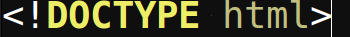
- Indique au navigateur que c'est une page HTML
-
- 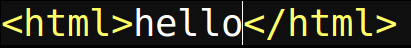
- la balise qui inclut le contenu dans la page Web
les terminologies
de base
Créeons l' En-tête
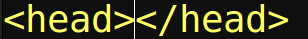
Contient des information sur la page Web
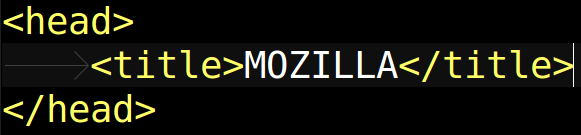
ecrire le titre de la page Web
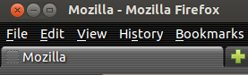
Des paragraphes
dans le corps
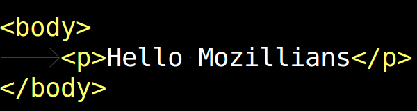

Les Paragraphes et Les Titres
pour donner un rubrique à notre paragraphe
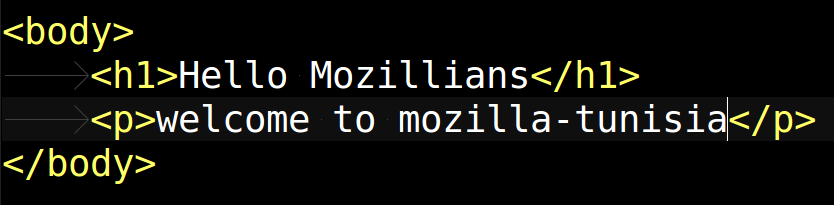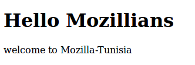
On peut avoir plus
d'une taille:
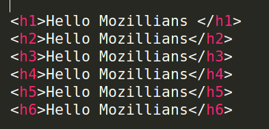
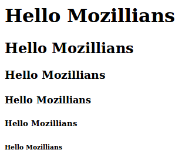
Ajoutez des images dans
votre site!
vous pouvez ajouter des images à votre page web pour le rendre ultra chic
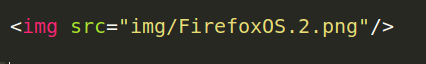Cliquez Sur l'Image!
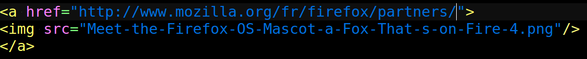Créeons des Listes
Liste Numerotée
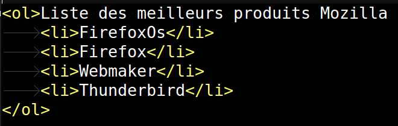 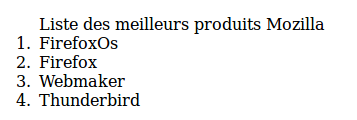Liste Non Ordonnées
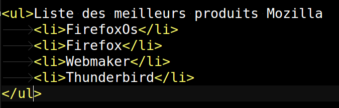 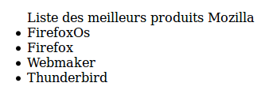Les Balises de
Formatage:
vous pouvez changer l'apparence de vos mot avec ces balises
vous pouvez visiter ce lien pour plus d'information
Apprendre sur les tableau
très utile à utiliser
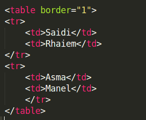 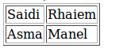Diviser pour régner
Une des balises de structure les plus polyvalentes , qui vous permet de diviser votre page en plusieurs conteneurs

CSS
Cascading Style Sheets
- Décrire l'apparence et le format de votre code HTML
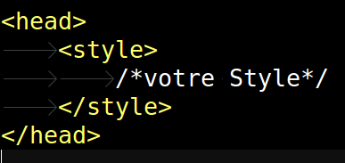
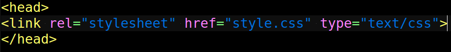
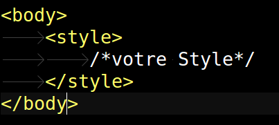
La Syntaxe CSS
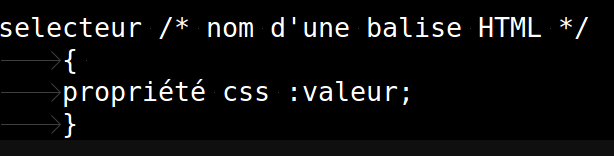Les Couleurs
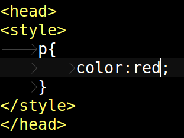 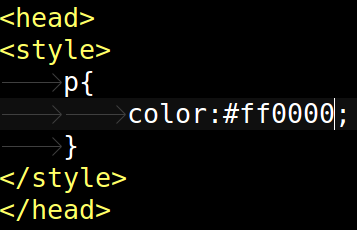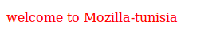
Les Bordures
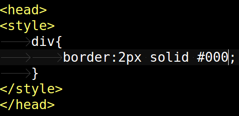 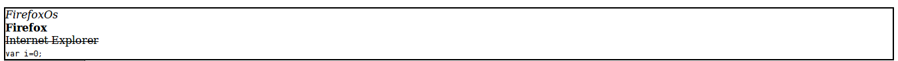keep it classy! :D
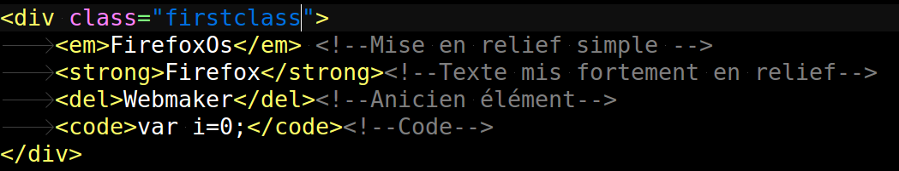 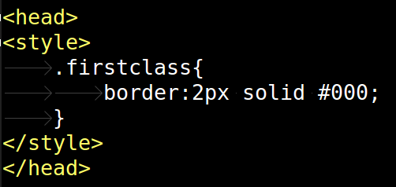ID please!
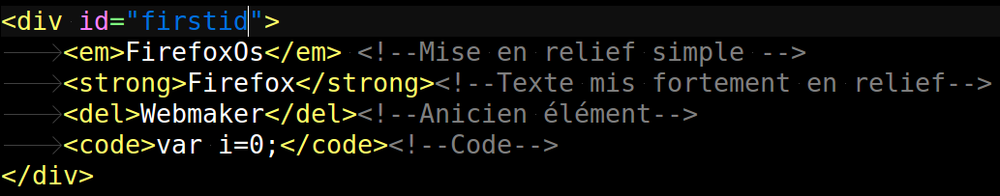 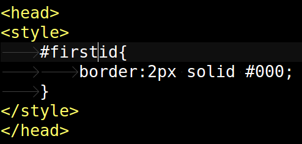Les pseudo Class
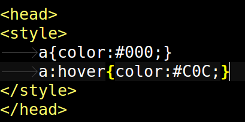Positionnement
Margin:l'espace autour de l'élément
Padding:spécifier la marge qui sépare un élément de chacune de ses bordures
Nous contacter :)
Site : mozilla-tunisia.org
IRC: #mozillatunisia
Contact: contact@mozilla-tunisia.org
Twitter: @MozillaTunisia
Facebook: facebook.com/MozillaTunisia